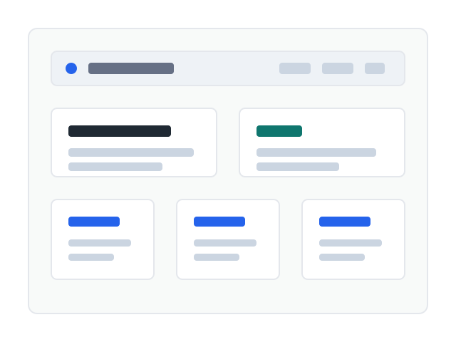

HTML
시맨틱 태그, 앵커 링크, 접근성 있는 폼 구조를 설계합니다.
About

이 포트폴리오는 프레임워크 없이 브라우저가 이해하는 언어만으로 제작합니다. 구조는 HTML, 표현은 CSS, 동작은 JavaScript가 담당하도록 역할을 분리합니다.
특히 다크 모드, 폼 검증, GitHub API 연동처럼 화면 상태가 변하는 기능을 직접 구현하며 React 학습 전 필요한 사고방식을 익힙니다.
Skills
시맨틱 태그, 앵커 링크, 접근성 있는 폼 구조를 설계합니다.
Flexbox, Grid, CSS 변수, 반응형, 다크 모드를 구현합니다.
DOM 선택, 이벤트 처리, 상태 변경, 렌더링 함수를 작성합니다.
fetch와 async/await로 GitHub 저장소 데이터를 가져옵니다.
Projects
Contact